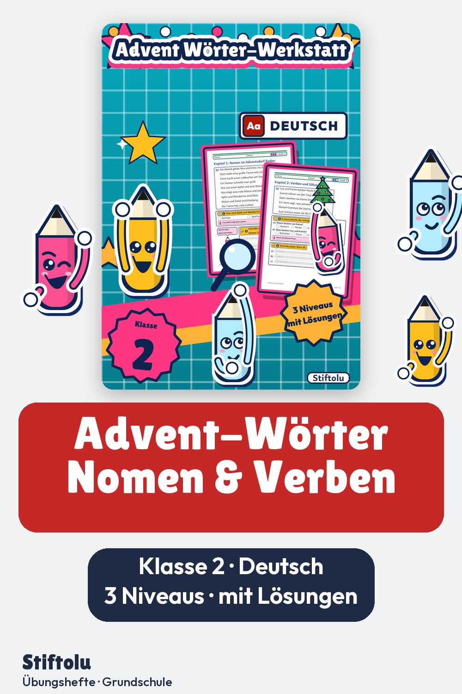
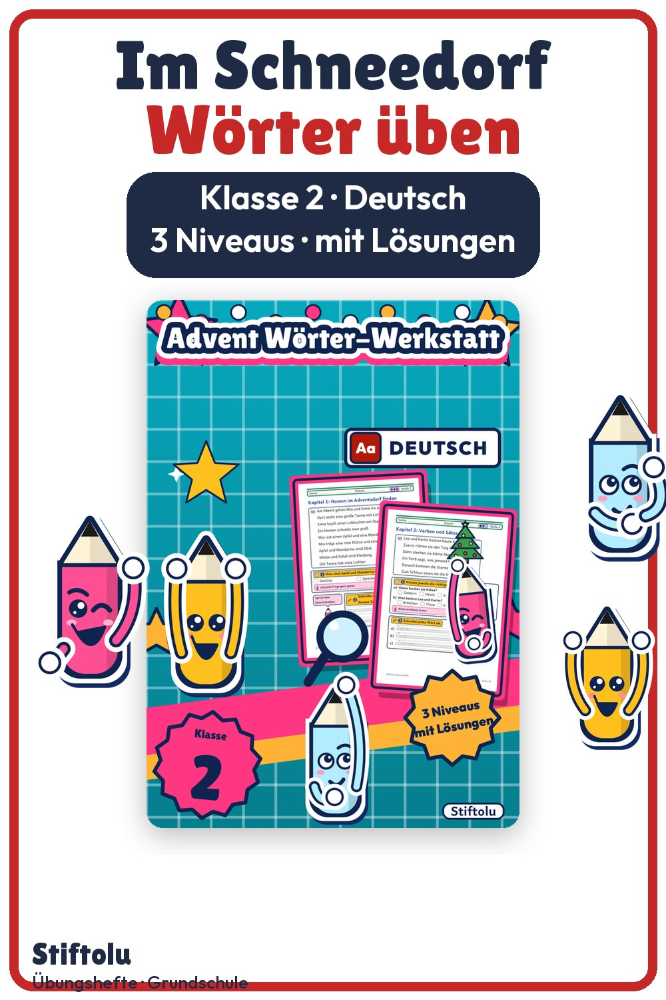

Werbung · Übungsheft von Stiftolu
Nomen im Adventsdorf finden und Sätze bauen – Advent Wörter, Klasse 2


Im Schneedorf beginnt eine kleine Geschichte, und mittendrin üben Zweitklässler die Wortarten Nomen und Verben. Erst Nomen großschreiben, dann Sätze mit Punkt schreiben – in drei Niveaus, damit jedes Kind passend arbeitet. Wer Lösungen zur Selbstkontrolle möchte: sie liegen auf den 28 Seiten bei, das Heft ist erhältlich auf eduki.